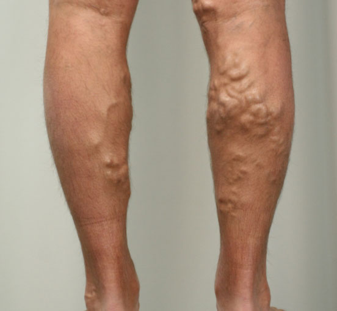

Varices y arañitas. ¿Cómo deshacerse de ellas? Entrevista con un especialista certificado en Dermatología.
De los editores: las varices es una de las patologías más comunes de la piel. Las investigaciones estadísticas y epidemiológicas así lo confirman: los datos muestran que aproximadamente 250 millones personas sufren de varices en todo el mundo. En nuestro país, la cifra es de aproximadamente 12 millón de personas afectadas. Las varices son una enfermedad autoinmune grave y potencialmente mortal. Hemos hablado de la situación del tratamiento de esta enfermedad en México y lo que los pacientes pueden esperar con Daniel Martinez, un especialista certificado en Dermatología.
Hola, Daniel. La primera pregunta que quisiera hacerle es: ¿las varices son tan peligrosa como se dice?
Como ya sabes, escribí una monografía que titulé "Varices: la estrategia de lucha", de modo que podría hablarte sobre los peligros de esta enfermedad las 24 horas del día. Pero voy a resumirlo al máximo: en la actualidad, las varices son realmente una de las enfermedades de la piel más peligrosas. Además de desfigurar el aspecto físico de una persona, haciendo que su vida sea mucho menos cómoda, también causa varias complicaciones. Dicho esto, esta enfermedad reduce la esperanza de vida de una persona en un 20 - 30 %. Eso significa que las personas afectadas por las varices viven un promedio de 15-20 años menos.
las varices casi siempre conlleva enfermedades coexistentes. Esta condición se llama patología comórbida. Las personas afectadas por las varices tienen 2-3 veces más posibilidades de desarrollar arterosclerosis, un accidente cerebrovascular, hipertensión primaria, dislipidemia, diabetes y enfermedad de Crohn.
Para proporcionaros una mejor idea de lo que estoy hablando, les mostraré varias fotografías tomadas por médicos de la Clínica:

¿Qué se está haciendo en México para ayudar a las personas afectadas por las varices?
Para ser honesto, hay una falta de esfuerzo coordinado, y la mayor parte del trabajo dirigido a la mejora del tratamiento de las varices lo llevan a cabo los pocos médicos que trabajan en centros de investigación médica. La mayoría de los hospitales no tiene ningún programa de investigación y trata las varices de forma convencional, lo cual a veces puede ser ineficaz.
La Clínica Fundación de la Piel y yo, personalmente, nos estamos esforzando al máximo para realizar cambios y ayudar a nuestros pacientes. A pesar de nuestros recursos limitados, nos esforzamos en mejorar la situación del tratamiento de esta enfermedad a nivel nacional. Hace poco hemos firmado un acuerdo para unirnos al proyecto "Antivarices". Esto nos ha ayudado a tener acceso al primer medicamento desarrollado dentro de este proyecto, la "crema contra las varices". Actualmente, es un medicamento realmente eficaz para tratar las varices, aunque no sea una cura al 100% su eficacia esta comprobada para aliviar los síntomas.
¿Se han sometido pruebas pertinentes? ¿Qué demuestren que este medicamento es realmente eficaz?
El es útil en el 93% de los casos: reduce las manifestaciones de las varices y las arañitas de forma impresionante y recupera la piel. Además, relanza el sistema inmunitario del cuerpo, prácticamente borrando la causa de la enfermedad. Esto significa que esta crema puede hacer que tu piel tenga un aspecto normal y reducir las causas de la enfermedad, evitando una recaída.
En estos momentos, es uno de los el medicamentos más eficaces contra las varices que se encuentra disponible en el mercado. La única alternativa posible son los ciclos de tratamiento que ofrecen los hospitales privados especializados. Sin embargo, sus altos precios provocan que estos tratamientos sean inasequibles para la mayoría de las personas. es 40-50 veces más económico y su eficacia es muy alta.
Creo que muchos de nuestros lectores quisieran saber dónde pueden comprar la "crema contra las varices".
Actualmente, este medicamento tiene una elevada demanda, a causa de su eficacia. Antes no se encontraba disponible en el mercado nacional, ya que estaba reservada para los países que participaban en el proyecto "Anti-varices". Cuando nos unimos al proyecto, fue posible iniciar el suministro de en México.
Cualquier persona puede realizar un pedido ahora mismo y comprar esta crema para su aplicación individual. La entrega se realiza por servicio de mensajería (el pago se realiza al momento de la entrega). La administración de esta crema no requiere asistencia adicional en las afecciones normales, por lo tanto, cualquier persona puede utilizar este medicamento.
Daniel, muchas gracias por esta entrevista. ¿Desea añadir algo más para nuestros lectores, antes de despedirnos?
Quiero decir que cada persona debe cuidar de su salud. las varices es una enfermedad muy peligrosa. Por eso es muy importante empezar el tratamiento antes de que sea demasiado tarde. ¡Simplemente imagínate QUE PUEDEN TRATAR LOS SÍNTOMAS DE LAS VARICES AQUÍ Y AHORA! Claro está que los casos severos no pueden ser tratados únicamente con esta crema y un seguimiento médico es esencial. No sería decepcionante dejar escapar esta oportunidad?
Esta entrevista fue llevada a cabo por Lucero Sánchez.
Samuel -
¡Muchas gracias! No hay ningún flebólogo en nuestro hospital más cercano. En cuanto a mi médico de familia, fué de poca ayuda. Un día me encontré con este medicamento y lo pedí. ¡Es muy barato y eficaz! ¡Gracias de nuevo!
Jimena -
Gracias por las opiniones, yo también he pedido esta crema. Espero que me ayude.
Miguel_00 -
Yo también he pedido esta crema. Me prometieron que la recibiría en 3 días (vivo en Buenos Aires). De modo que la estoy esperando.
Flor -
Quiero expresar mi gratitud a aquellos que han hecho que esta crema esté disponible para su compra en México. Creo que había probado todo lo posible para tratar las varices, ¡y solo la me ha ayudado realmente! ¡Muchas gracias!
Rosa Vazquez -
Hace poco he visto esta crema en la televisión. Decían que por fin está disponible siendo este uno de los mejores medicamentos del mundo contra los síntomas de las varices y las arañitas.
Camila -
¡Este descuento es impresionante! Yo también sufro de varices, así que he pedido esta crema. Espero que me ayude.
Ana -
¿No es una estafa? ¿Por qué solo se vende en internet?
Marta Díaz -
Marta, no sé si realmente has leído esta entrevista. Se vende en internet porque las farmacias lo venderían a precios ridículamente caros. Por otro lado, hay una opción de pagarlo cuando lo recibes, lo cual significa que puedes examinar lo que compras y comprobarlo antes de pagarlo. Además, hoy en día se vende de todo por internet, desde ropa hasta electrodomésticos y muebles.
Irene -
¡Gracias por una entrevista tan interesante!
Luisa -
La pedí para mi marido, ya que sufría de varices por tercer año consecutivo. El fármaco llegó justo tras una semana, y ahora está radiante de felicidad. Es un contraste muy grande con el rostro sombrío que tenía antes.
Juan Diego -
Gracias por este consejo. Los hospitales públicos están desbordados y las clínicas privadas son demasiado caras. ¡Estoy deseando obtener esta crema!
Carmen -
¡He leído todos los comentarios y me he dado cuenta de que tenía que pedirla!
- Enfermedades de la piel
- Varices
- Acné
- Sarna
- Reacciones alérgicas de la piel
- Trastornos de pigmentación
- Infecciones de la piel
- Verrugas
- Fotodermatitis


María L. -
Pedí esta crema y, tras 4 semanas de uso, ¡me siento mucho mejor! A pesar de que he sufrido de varices durante 5 años.